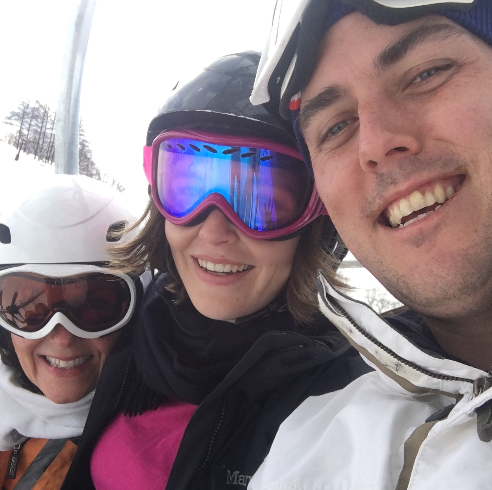
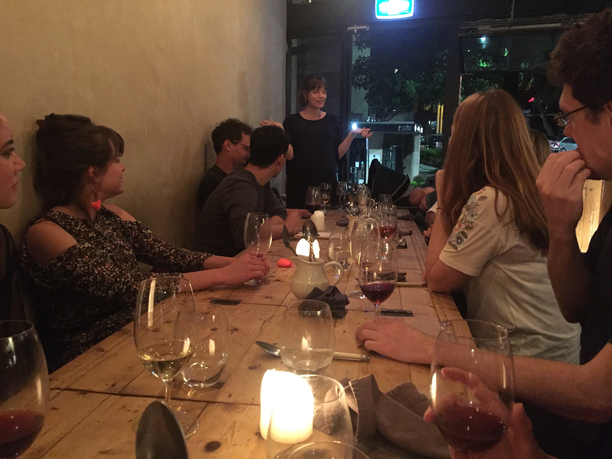
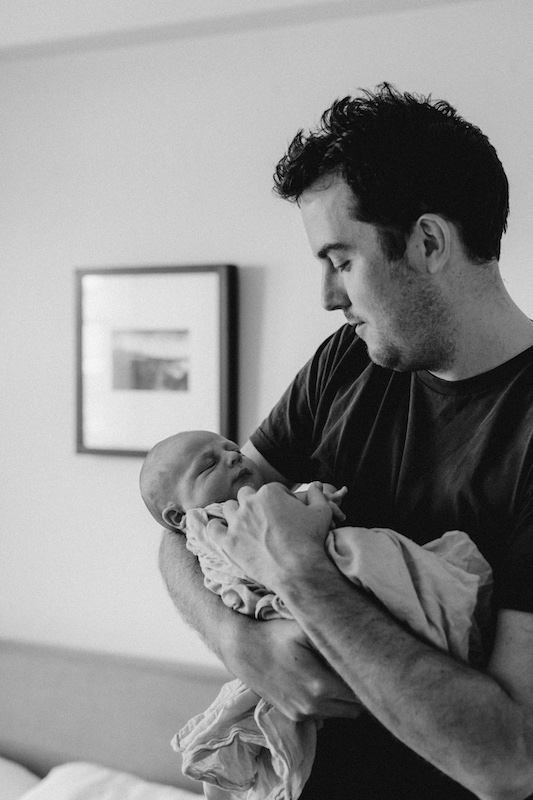

What a wonderful year it's been.
What an unforgettable year it's been.
Japan. Remember that!
God that feels like a while back. We skiied, we ate we onsen'd. But that was just February.
G + Ts were drank and ...
You persevered to knock off a major piece of policy work.
You distinguished yourself and completed your masters among the top of your class (with some lebanese flair).
You are loved. By so many, and so much. Just think of your 30th!
You made a baby. Well we both did but the pregnancy, the labour, the bounceback. You've made it seem so easy. Lachie couldn't be luckier. You're going to be a brilliant mum too.
...and you even passed your driving test.
I've never felt quite so close to anyone, as I do to you. It's been such a pleasure to be but a small part of your journey. I excitedly look forward to even more in 2018 and beyond.. (Maybe by then we'll have a bathroom).
I can't underline enough how proud you should be of the women you are and continue to be.
With all the love in the world,
from both your boys,
now and
always.
xx
